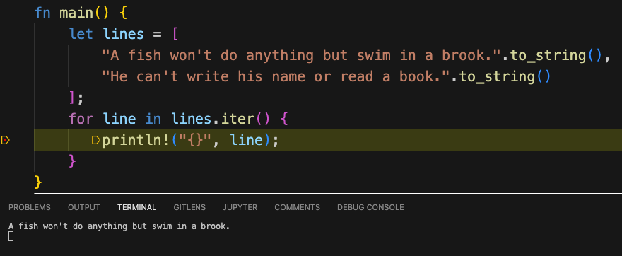

What's All This, Then?
Once upon a time, some guys wanted to learn Rust. Their heroic tales were told in a book/website that became famous.
But that's getting ahead of ourselves.
This website is here and is not awesome and famous yet because you have to start somewhere. So we started somewhere, with a web site built on mdbook.
There are static site generators based on Rust too, and there's Wordpress and the rest of the blogging universe. But mdbook was handy. Either way, a static site is a nice cheap starting point.
Where's the Code for This?
Yes, as a matter of fact, we are looking for contributions! Thanks for asking. Here's the RustAssured repository.
"Oh Look!"
(said John). You can run Rust code right here in the book by doing something like:
```rust
println!("Hello, World!");
```
Here's what happens:
#![allow(unused)] fn main() { println!("Hello, World!"); }
There is a lot more you can do like including files, and tagging sections of rust files so you can include snippets, and I do a lot of it in passing_objects.md.
The adventure continues...
Debugging Multiple Rust Applications in VS Code
Working on this blog in mdbook, I soon learned that it was possible to write individual "application files" and include them in markdown using a syntax that looked like this:
```rust
{{ #include <filename> }}
```
This made them runnable in the browser by sending the code out to Rust Playground to be compiled and run. However, often when developing these, "snippet-length" application files, we want to run the program in the debugger.
At first this didn't seem possible, since the VS code debugger seemed to want to work with a Cargo configuration, and for all I knew when I began my research, Cargo could only build a single application or library at a time. After digging into it for a little bit, however, it turned out that solving this puzzle was not only possible, but fairly easy.
Debugging Rust in VS Code -- First Steps
Before we describe how to set up Rust for debugging multiple small applications, we need to back up and make sure we have the pre-requisites to debug anything in Rust. To debug Rust, we first need to install two VS Code extensions:
- Rust-Analyzer provides language support (code completion, navigation, etc). for Rust.
- CodeLLDB is an extension that uses LLDB to debug Rust, C++, and other compiled languages.
The next step after installing these extensions is to make sure you can set breakpoints in your source. To do this, go into VS Code settings and search for the word "Everywhere" to bring up the setting "Allow Breakpoints Everywhere" and make sure that this option is checked.
Cargo Options and launch.json
For debugging anything in Rust using VS Code, one essential resource is the Cargo Targets page of the Cargo Book. It turns out that there are a few more target types than simple binary targets (applications, defined in src/main.rs) and library targets (defined in src/lib.rs).
For example, it's possible to declare additional binary targets, with the source going in src/bin/target_name.rs, but each one of these requires a separate section in cargo.toml, plus a way to tell the debugger (via launch.json) which of these we want to run. That solution would work, but it would be much more high maintenance than we wanted.
Fortunately, the next piece of Cargo-ie goodness that we bumped into turned out to be just the thing we needed for our RustAssured snippets. This was the examples directory. It turned out we could add any rust "executable" src file (i.e., a file with a main method) to that directory, and as long as we had a minimal cargo.toml in the root, we could run the file <root>/examples/expressions.rs (for example) with the cargo command cargo run --example expressions.
Here's all we need for our minimal cargo.toml file, which we placed in the root of the repository:
[package]
name = "unused"
version = "0.1.0"
Now hang in there with me -- I know this is a lot of explanation, but believe it or not, we're almost done! We have our extensions installed, our breakpoint setting set, and our stub cargo.toml file.
The only thing left to do is to add (or edit) the file .vscode/launch.json to contain this configuration:
{
"configurations": [
{
"type": "lldb",
"request": "launch",
"name": "Debug current examples file",
"cargo": {
"args": [
"run",
"--example",
"${fileBasenameNoExtension}"
]
},
"args": []
}
]
}
It's possible to modify this to include whatever name you want and run any cargo command, for example, to run tests. As written, it debugs the current file in the examples directory, so I can set a breakpoint to run these two lines of Swinging on a Star, by Bing Crosby, one line at a time.

And of course, now that I know that Bing Crosby's two lines about a fish work OK, what kind of a bad person would I be if I didn't let you run them in the browser, too?
Just click on the code below to see the run button:
fn main() { let lines = [ "A fish won't do anything but swim in a brook.".to_string(), "He can't write his name or read a book.".to_string() ]; for line in lines.iter() { println!("{}", line); } }
Early Experiments
Our first experiments were just a hodge-podge of notes and other cool things we hacked on. See the navigation bar over on the left for complete details!
Passing Objects
One of the things that's "hard" about Rust when you first start learning it are the different ways you can pass an object to a function or return one, and the types associated with them.
For example, Strings come in a few different flavors, and you need to know which one to use to return them.:
#![allow(unused)] fn main() { // This works: fn return_string() -> String { let not_global = "I return ok, because I'm not global.".to_string(); not_global // Funky Rust return syntax. } // This doesn't, uncomment to see the error /* fn return_broken() -> String { let broken = "Not OK -- I'm a global literal!"; broken } */ println!("{}", return_string()); }
Mutable methods vs immutable methods
Before learning about passing objects, we need to create a basic "object" and test it, which has mutable and immutable methods.
pub struct Person { name: String, state: String, } impl Person { // See https://rust-unofficial.github.io/patterns/idioms/ctor.html pub fn new(name: String, state: String) -> Self { Self { name: name, state: state } } pub fn print(&self) { println!("{} lives in {}.", self.name, self.state); } // Note it's &mut, not mut& pub fn move_to(&mut self, state: String) { self.state = state; } } fn main() { let static_john = Person::new("John Lockwood".to_string(), "California".to_string()); static_john.print(); // Static John can't move! Next line is an error // static_john.move_to("North Carolina".to_string()); // Mutable John can let mut john = Person::new("John Lockwood".to_string(), "California".to_string()); john.print(); john.move_to("North Carolina".to_string()); john.print(); }
Passing Objects
Basically there are about four ways things can get passed around:
- Directly non-mutable
- Directly mutable
- By reference non-mutable
- By reference mutable
Passing objects directly
This MOVES the object to a new owner. If you do this, you can't use the reference any more. I.e. Can do it mutably or not.
fn pass_ownership_non_mutable(person: Person) {
person.print();
}
fn pass_ownership_mutably(mut person: Person) {
person.move_to("New York".to_string());
}
Calling:
// Pass a person not by reference
let john2 = Person::new("John".to_string(), "California".to_string());
pass_ownership_non_mutable(john2);
// Can't do -- borrowed after move: E0382:
// john2.print();
// Note we don't need to declare this as mut here
// for that it matches the function signature of pass_ownership_mutually
let john3 = Person::new("John ".to_string(), "California".to_string());
pass_ownership_mutably(john3);
// Can't do -- borrowed after move: E0382:
// john3.print();
Passing by reference
fn pass_reference_non_mutable(person: &Person) {
person.print();
}
fn pass_reference_mutably(person: &mut Person) {
person.move_to("Washington".to_string());
person.print();
}
Calling:
let mut john3 = Person::new("John ".to_string(), "California".to_string());
pass_reference_mutably(&mut john3);
// Reusing, ownership not transfered!
pass_reference_non_mutable(&john3);
Fun Rust Facts
This is just a collection of various notes.
Both Scott and John noticed how cool the rustc --explain <error> feature is.
Array Type Declarations
Array type declarations and initializers are a bit different in Rust than in other languages. Here are some examples
// Array type and initialization examples fn main() { // Let compiler figure out that it's an // array of 4 i32 elements let implicit = [1, 2, 3, 4]; show_four(implicit, "implicit"); // Explicitly declare using type ; count syntax let explicit: [i32; 4] = [5, 6, 7, 8]; show_four(explicit, "explicit"); // Explicitly declare and initialize // an array with 5 elements, each set to the // number 33. let five_33s: [i8; 5] = [33; 5]; println!("five_33s: {:?}", five_33s); } // First parameter is array of exactly 4 values of type i32 fn show_four(array: [i32; 4], name: &str) { println!("{}: {:?}", name, array); }
Expressions
Expressions do not end in a semi-colon, and they return a value. This can be used for function return values as well as interesting things like setting a value in a conditional expression.
fn add(x: i32, y: i32) -> i32 { // Equivalent to "return x + y;" x + y } fn main() { // The add function uses an expression to return a value, see above. println!("2 + 2 = {}", add(2,2)); let addend = 2; // Expressions can be return a value from a conditional as well. let result = { if addend > 3 { addend } else { add(addend, addend) } }; println!("The result was {}", result); }
Displaying Custom Types (Structs) in Rust
In An Example Program Using Structs, the Rust Book showed some of the error messages we could get when trying to print a struct to the console.
That resource left unanswered the question of how to implement std::fmt::Display, so we added that in the version below.
use std::fmt; #[derive(Debug)] struct Rectangle { width: u32, height: u32, } impl fmt::Display for Rectangle { fn fmt(&self, f: &mut fmt::Formatter) -> fmt::Result { write!(f, "Rectangle{{ width: {}, height: {} }}", self.width, self.height) } } fn main() { let rect1 = Rectangle { width: 30, height: 50, }; // For this to work, we needed fmt::Debug, given by #[derive(Debug)] println!("Using pretty_print: rect1 is {:?}", rect1); // This too. Here, make sure to use &rect1, or dbg! will take ownership! // Note that the output of this line will only appear // if you use rustc to compile rect_example.rs and run it. // It won't show up in mdbook! dbg!(&rect1); // For this we needed fmt::Display, manually implemented. println!("Using display format: rect1 is {}", rect1); }